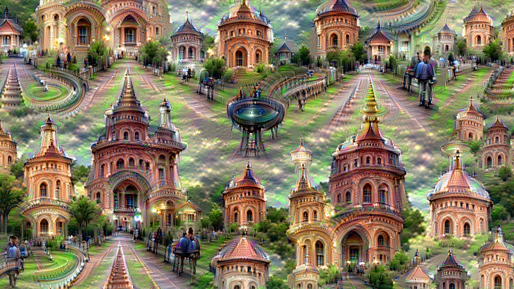

About me
I have recently finished a PhD in Machine Learning at the University of Cambridge. My supervisor was Zoubin Ghahramani and my advisor was Carl Edward Rasmussen. I joined the machine learning group at Cambridge in 2011 after working as a management consultant at the Boston Consulting Group. Before that, I received a B.A. in mathematics and M.Phil in Statistics from the University of Cambridge. I have recently been working on automatic machine learning.
Latest research and news
Three new publications
Model criticism using kernel two sample tests (NIPS), many-to-many entity matching (PAMI) and my PhD thesis.

A neural algorithm of artistic style
An exploration of an algorithm that can merge the style of one image with the content of another.


Going places in the DeepDream
A video exploring the features learnt by a deep net.
